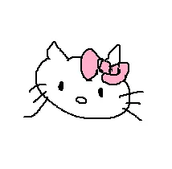

Happy Birthday!!!
STH ABOUT THIS WEBSITE
2024.7.27 ver1.0
上次已经写了一个本子啦 咳虽然应该是半个()
但是反正就是已经有一个纸质的啦嘛！ 然后就想着整点不一样的
本来其实想的很简单的 就用之前写pdf的那个markdown来写。
但是又想到,哎呀 人家用pdf的好像都是什么控告出轨啊什么玩意的
就感觉不太吉利说是 然后就想着直接转成html形式好了。
但既然都要写html了 不把他做成一个网站岂不太可惜
而且html语言也要从头开始学 就想着也能慢慢学到一些知识
说不定还有很新奇很好玩的东西呢
所以它就慢慢的出现啦！
这个赛博本子就用来记录从离你生日还有100天到生日那天的一些想法
大概就是看到什么想给你当礼物的东西就写下来
再写一点某些时刻突然产生的一些想法
尽力学一点html把这个网站优化的好看一点
总之会把自己所有的准备都记录下来！
希望不会过于唠叨，让你看着太麻烦
你能看到的时候应该要过生日了吧 嘿嘿
生日快乐呀宝宝！
愿你每天幸福快乐，无忧无虑
遇到不顺心的事情，记得有我在
无论怎样我们都可以度过的！
我爱你！
2024.8.02 ver2.0
可以说是超级大更新了，值得我写一个更新日志了哈哈
配色方面的话，想的是用薄荷相关的那种，然后去配色网站找了一下思路
但我也不是什么色彩大师，啊啊审美也没那么高，然后就对着调色板慢慢的试
感觉差不多我就用上了，最后呈现的效果也还行！嘿嘿
然后日期的这个颜色借鉴了一下巴黎奥运会的那个紫色，但是因为加粗了其实有一点区别
但是不得不说确实这个也和整体虽然有差别但出乎预料的和谐
换我自己肯定想不出来这种搭配的w
总而言之就是！现在这个网站就算莫名其妙被你发现也算能拿得出手了嘿嘿
但后面的任务其实也不少来着，还有加一个侧边栏导航，然后图片插入还要优化一下子
哦对那个小标题！之前都是中文但是加背景之后不好看，都换成英语了哈哈
啊啊这个颜色应该不算难看吧呜呜
你别不喜欢呜呜
下次大改再来这里嘻嘻
爱你！！！！！！
DETAILED PROCESS
2024.7.27 101天
为什么要从101天开始，哈哈其实我也不知道，可能因为p吧（bushi
其实就是一开始想着要提前先学一下吧，然后先开始了
结果发现这一天干了好多事情！
那就写进来吧就写进来了
先就是想了一下该怎么建一个你能输入一个网址就能看到的网站
因为吃鸡哥之前做过类似的东西，就想着问问他
结果他说过了太久了找不着视频了，我就想着自己搜搜了
一开始是在b站找了一个教程，然后就教租服务器啊什么的
但是我又觉得很麻烦，而且他都用了一堆我有点看不起的模板插件啊什么的
还有广告，就很烦人
我又找了找，发现有一个搬运youtube的视频，用github page做的
刚学的下划线没地方用我用一下 嘻嘻
github我熟啊上课要求用呢，然后就很容易上手了，还很成功
https://crfrex.github.io/hpbrhtml
没跟zuozuolove域名链接的时候就长这个样子
不是很好看嘛，正好那个教程也教了，我就想着买一个域名链接一下子。
然后就开始照着教程上域名网站买域名
就各种各样的域名后缀还挺多的，我就搁那挑呢
吃鸡哥突然跟我说有.love后缀，我就觉得非常不错啊然后速速拿下了
其实还挺便宜的，一年十几块，然后吃鸡哥看的国内卖的一年三十几块
便宜好多，我真厉害哈哈
照着教程很顺利的就做好啦，忍不住给朋友们炫耀了一下子
要你看到还要挺久的呢，有一点遗憾
但总归这个东西是给你的嘻嘻，所以也还好啦你总会看到的！
总而言之今天还是很顺利的，不错不错
就是这个小网站看起来太简陋啦希望以后会慢慢好起来吧！
附带一个现在的样子：

爱你！
2024.7·28 100天
我就知道！不可能有这么顺利的呜呜:(
本来昨晚上还好好的，然后今天突然就给我退款了
我就感觉大事不妙啊，然后就去域名网站登陆看看
结果账号就被锁了，发邮件给我让我解封
啊啊啊好烦啊，就按照它提示的做
提交身份证照片人家还不认，可能因为是外国网站吧
然后我就翻箱倒柜翻出来护照，然后拍了照片提交
无敌了希望明天可以好起来
但是网页该写还是可以写的就是没办法及时更新了说是
被这个事情整的今天也没写什么东西
祈祷祈祷一定要好！！
2024.7·29 99天
哈哈！解封了！
我昨晚还额外给那个邮箱发了个求情的邮件
就说什么给我女朋友准备礼物啊啥的希望一定要好
哈哈你别说还挺管用的
今天就解封了，然后我就赶紧把域名又重新买了一遍
然后又走了一遍流程，这次应该就不会再不好了！
希望吧

然后讲一下正题！
礼物现在就想是不是有一点点早呢你说
但是现在刷到一些东西，觉得适合给你当礼物的我就已经开始不自觉地点收藏了
到时候装一个超级大的礼物盒子，然后让你像寻宝一样慢慢拆吧
但是应该也有很多可能后来会由于各种原因放弃吧，感觉有点可惜
所以决定在后面列一个礼物清单，嘿嘿所有的想法都列进去，送不送再说
到时候你有觉得不错但是我又没送的，你指出来我以后给你嘻嘻
爱你！
2024.7·30 98天
先完善了一下礼物清单，嘻嘻感觉有好多好多东西都想送给你，但是一下子又没法全想起来呢
先写这些然后想起来再继续整点
然后今天不是出来学习啦嘛，就看了一些html的课，结果好像对我的优化作用不是很大。
但是也多少学到一点知识，嘻嘻
给你展示一下嗷
哈哈其实上面的那几个按钮都没啥用宝宝，因为我这个没有链接服务器所以没办法提交上传，所以你随便答就好了嘿嘿
但是bantan day是07.24捏，你肯定记得住啦！
爱你！
2024.7·31 97天
先粘贴自己的super超级无敌720°旋转爆炸幸福瞬间 嘻嘻

这小头像，嘻嘻，画的真不错呀宝宝酱，想把除了情头之外的所有软件头像都换成这个!!
开心开心开心嘻嘻

呜呜呜整个来看这个画布就感觉是一段很奇妙的时间。
平平无奇的玩完游戏的一个夜晚，因为心血来潮才打开的画图软件，然后从一个小恐龙慢慢的开始
最后变成这么多好有意思的小东西，再加上一个我超爱的姐姐宝宝签名！呜呜
干旱和还有一个很重要的点就是，整个都是两个人一起聊着聊着念念叨叨的完成的。
这种感觉就超超超超级幸福我说 呜呜呜呜呜呜
太太太太爱你啦！！！

让我想要更更用心地把这个网站好好做给你看呢
但是也在考虑就是 是不是可以就是在让你不发现这个惊喜的基础上，让你参与一些呢
啊啊感觉好难，不过我也很想这里面有你的参与，嘻嘻我尽力试试
一直有你陪着的感觉真的很棒！！！！！
有你陪我玩游戏很棒，出门的时候也挂着电话也超级棒
一天聊好多好多很棒，什么都可以和你分享你也会看很棒
经常关心我很棒，叫我宝宝感觉也超级棒
呜呜呜呜呜呜总之就是所有关于你的和你相处的时候都很棒！！！！！
晚上有一点不开心也被你发现了呜呜
一开始我自己都不知道为什么
可是姐姐宝宝还是很好很好的安慰我
呜呜 太好了也
爱你！！！！！！
2024.8·1 96天
建军节快乐！
哈哈 你自己说的 这是国家节日都可以庆祝的嘛
啊啊啊今天是一个没得到想要的重视的小孩胡乱耍脾气的一天
朋友遇到那种事而且那个b男人还来说你了 怎么说都会很生气吧
当时脑子里面也理解你的呜呜 但是一看你玩的时候还看手机什么的就没忍住
还是把不高兴表露出来啦
让你不仅闹心那个事情我还给你添麻烦
啊啊呜呜太不好意思了宝宝！！！！
还有就是等你打电话过来这个
其实怕你觉得最近电话有点太打了，想这样看看你的意见
最后还是忍不住直接问出来了
但是就是很想和你聊天听你讲话 超超超开心的
既然你说没有关系的话 那我可就继续骚扰你噜
嘻嘻
爱你！！！！！！
2024.8·2 95天
今天又来图书馆啦！
开始学css了，就是用来美化版式的东东
希望今天可以让整个网站变得更好看一点
启动！！！！！
NONE-DATE THOUGHTS
自习遇到的各色各样的人们
- 被迫来学习的高中小孩----为啥能看出来是被迫呢，因为他摆出来书花了半小时，全部展开之后
他就开始睡觉了！哈哈哈哈哈哈！就是那种上课时候那种，额头顶着书，脸悬空着睡着了哈哈哈哈哈哈
感觉真的就很松弛，看他课本应该是高二吧，有一本选修化学，像是在家老被催，然后早起来图书馆觉得就没有人管了
结果起太早了太困了就睡着了哈哈哈哈哈哈哈
但这都是我想的，万一人家只是困了休息会呢，嗯，没错哈哈哈哈哈
- 超绝老大爷和他的超雄小孙子----就是我跟你说的那个袒胸露乳的大爷啊啊我真是无语了哈哈哈哈哈
看一会他就要扇着衣服站起来晃悠一圈，然后看看旁边写作业的孙子，叹一口气之后一边扇风一边继续看书
他的孙子也挺奇怪，超雄小孩，写一会就开始乱跑，到每个人面前就凑到旁边看着你在干嘛，笑死了
还看的怪认真的，盯着你呢哈哈哈哈哈
总归来说虽然说人家的自由，但还是有点介意的，因为算是打扰到别人了嘛，感觉不太好
-
超级i人甩面小哥----那个为了完成任务而无比坚毅的眼神，我真能记很久哈哈哈哈哈哈哈哈哈哈哈
我看他盘子里面还有好几份面呢，演完之后低着头拿着音响就跑了，急匆匆的
笑死了希望他不会被其他超级e人顾客给玩弄（bushi
想你的时候发点疯
啊啊啊啊呜呜呜呜呜呜世界上怎么会有姐姐宝宝这么温柔的人！！！！
本来不想视频就是我的问题，你还一点都不生气，然后一点点的鼓励我，还疯狂夸夸
呜呜呜呜真的要感动哭了你也太好了呜呜呜呜呜呜
好爱你！！！！！！
我是这个世界上最幸福的小孩！！
本来就要个签名，然后你就给我画了好多好多，呜呜呜
不知道为什么啊就是感觉超级幸福呜呜呜呜呜呜
如果还能贴贴的话应该更幸福一点呜呜
好想见你呜呜呜
Gift Lists
P.S. 我这个编辑器有代码自动补全功能，然后我在这列礼物列表，他也给我自动补全呢
他让我给你送一套helloKitty餐具，真无敌了笑死我了
- some化妆品----那天临走的时候偷看到了你那个唇釉的色号，哈哈，maybe找人问问买个差不多颜色的嘻嘻
- Hello Kitty or什么别的你喜欢的卡通角色的u盘----因为本来想着就在本地写吗得用东西装着，所以要买一个u盘。
但是现在到网上啦就不用了。但还是想着送一个，万一当老师呢装ppt用哈哈哈哈哈
- 键盘----看中了那个达尔优的一个键盘，因为他有一个配色是薄荷曼波，非常不错啊非常不错，而且性价比也挺棒
- 键帽----我当时研究键盘的时候真的看到了好多好看的键帽！！当时也没人可以送这次我要挑一个好看的狠狠给你
- 鼠标----这个跟上面差不多啦，也是我当时研究了好多东西，所以也想给你整一个嘻嘻
- 鼠标垫----这个是因为我看我妈买了好几个，哈哈还挺好看的都，我偷一个送给你嘿嘿
- dy推的那个自己编的发圈----总得来一点crf手作吧哈哈，这个算一小个，而且我看到有Hello Kitty诶
- pingu小圆帽----当时搜pingu贴纸的时候搜到的，pingu也很想你呢，用这个callback一下吧哈哈哈哈哈
- 蓝牙小音箱----嘻嘻放炒菜小歌单用的（？
- 别的需要一些手工的小邓锡----还没找到哈哈，过两天逛逛淘宝吧
- 一些我喜欢的书----啊啊在这个书店自习不逛逛真是可惜啦，买一本菲茨杰拉德怎么样，我找找看
没找到，下次来再找吧
- xiu打火机----但是我不知道打火机平均价格啊啊，那个挺好看但是不到十块质量能行吗你说，我先买一个试试看要不 哈哈
- 玩具总动员周边----maybe一些玩偶之类的，巴斯光年手办是不是也不错哈哈哈哈哈